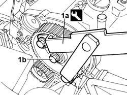
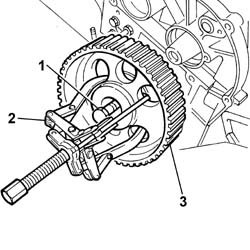
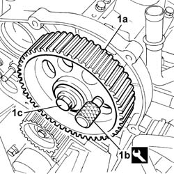
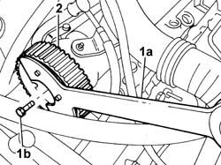
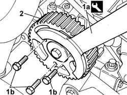

1032B40 TOOTHED-DRIVEN PULLEY (ONE) - R + R WITH TIMING BELT REMOVED
- Path
- Procedures > 10 ENGINE UNIT > 1032 TIMING SYSTEM > 1032B BELT TIMING SYSTEM > 1032B40 TOOTHED-DRIVEN PULLEY (ONE) - R + R WITH TIMING BELT REMOVED
- Kind
- repair procedure (removal / refitting; the operation number is the code)
- Applies to
- engines: 2.0 16V, 2.0 JTD 8V, 2.3 JTD 16V; all production periods
- Interactive page
- https://sloeber94.github.io/elrnDB-fDct/en/#/244000696
Applies to: engines: 2.3 JTD 16V; all production periods
 Removing
Removing
 Refitting
Refitting1. Using the reaction tool (1a) with pins, undo the bolt fixing the timing drive pulley (1b).
 | Description | Code | Function |
|---|---|---|---|
1a | Counter-torque | 1.870.815.000 | Timing pulley lock |
| Description | Code | Function |
|---|---|---|---|
1a | Pins for counter-torque | 1.870.836.000 | Timing pulley lock |

Applies to: engines: 2.3 JTD 16V; all production periods
1. Position a hexagonal bolt in the housing for the pulley fixing bolt.
2. Position the USAG 452/1 universal extractor and tighten the extractor pin until it is in contact with the bolt positioned previously.
3. Continue tightening the tool pin until the pulley is extracted from the camshaft.

Applies to: engines: 2.3 JTD 16V; all production periods
Refitting
Removing1. Refit the timing pulley (1a) in the housing on the shaft, position the pin (1b) for timing the pulley in relation to the timing sensor, then lock the bolt (1c) fixing the pulley to the shaft.
| Description | Code | Function |
|---|---|---|---|
1b | Pin for timing adjustment | 1.860.617.000 | Positioning of timing pulley with timing sensor |

Applies to: engines: 2.0 16V; all production periods
Removing
Refitting1. Using the reaction tool (1a), undo the bolt fixing the timing drive pulley (1b).
| Description | Code | Function |
|---|---|---|---|
1a | Counter-torque | 1.860.083.100 | Timing pulley lock |
2. Remove the toothed driven pulley.

Applies to: engines: 2.0 16V; all production periods
Refitting
Removing- Position the toothed driven pulley in the housing.
- Screw in the fixing bolt without tightening it.
- Insert the 10mm diameter reference pin.
- Using the reaction tool, tighten the bolt fixing the timing drive pulley.
| Description | Code | Function |
|---|---|---|---|
1a | Counter-torque | 1.860.083.100 | Timing pulley lock |
Applies to: engines: 2.0 JTD 8V; all production periods
Removing
Refitting1. Using the tool (1a), undo the bolts fixing the timing drive pulley (1b) to the flywheel underneath.
| Description | Code | Function |
|---|---|---|---|
1a | Counter-torque | 1.860.776.000 | Timing pulley lock |

Applies to: engines: 2.0 JTD 8V; all production periods
Refitting
Removing- Fit the toothed driven pulley and screw in the fixing bolts without tightening them.